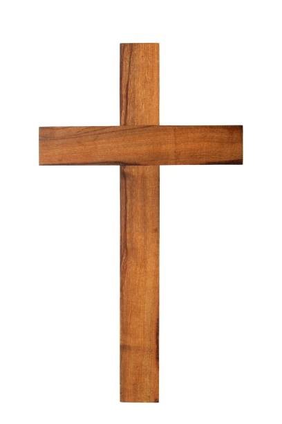

Psaume 150
1.Louez l'Eternel! Louez Dieu dans son sanctuaire! Louez-le dans l'étendue, où éclate sa puissance! 2.Louez-le pour ses hauts faits! Louez-le selon l'immensité de sa grandeur! 3.Louez-le au son de la trompette! Louez-le avec le luth et la harpe! 4.Louez-le avec le tambourin et avec des danses! Louez-le avec les instruments à cordes et le chalumeau! 5.Louez-le avec les cymbales sonores! Louez-le avec les cymbales retentissantes! 6.Que tout ce qui respire loue l'Eternel! Louez l'Eternel!